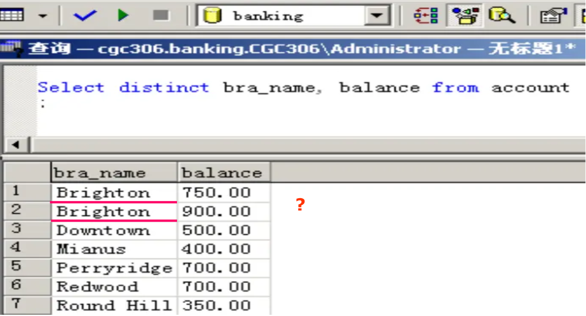

lec03 SQL
SQL 语句包括以下类型：
- Data-Definition Language(DDL)
- Create table
- Create index
- Create view
- Create trigger(监视器)
- Data-Manipulation Language(DML)
- Select from
- Insert delete update
- Data-Control Language(DCL)
- Grant revoke(权限管理)
Data-Definition Language¶
Example
Domain Types in SQL¶
在数据库中创建表格，表格中每一个属性都会有对应的类型或者域（domain）。
- char(n): 定长的字符串，具体长度由用户决定；
- varchar(n): 变长的字符串，最大长度由用户指定；
- int: 整型数，具体范围由具体机器决定（32 位）；
- smallint: 小整型数，同样由具体机器决定；
- numeric(p, d): 定长的小数，总位数是 \(p\) 位，在小数点后有 \(d\) 位；
- real, double precision: 单、双精度，具体精度由机器决定；
- float(n): 浮点数，其精度至少为 \(n\) 位；
如上就是一些基本类型，特别地，我们申明 Null 值可以被写在任何类型中。除此以外，我们还有一些关于时间的类型：
- date: 日期，包括年月日；
- E.g., date ‘2007-2-27’
- Time: 时间，表示一天内时间，包括时分秒；
- E.g., time ‘11:18:16’, time ‘11:18:16.28’
- timestamp: 即将上述二者组合。
- E.g., timestamp ‘2011-3-17 11:18:16.28’
Create Table¶
其意义为创建表格 r，各属性为 \(A_1\sim A_n\)，对应类型为 \(D_1\sim D_n\)。
同时会对表格进行完整性约束（integrity constraint），完整性约束有如下三种形式：
- not null，约定了某属性不可填入 null 作为值；
- primary key，指定该表格的主键/主码；
- check(p)，要求某些属性要满足表达式 p。
Example
主键也可以直接写在上方，同时在高版本的 SQL 中，约定主键默认了 not null。Drop and Alter Table¶
在创建完表格之后，我们可以对表格进行删改。
Drop 是删除表格的命令，其格式为 DROP TABLE r。该命令会在物理层面删除表格，是不可逆的操作，因此要谨慎使用该命令！
Alter 可以对表格进行增改。如果要在表格中增加属性，可以用如下格式实现：
当然也可以直接删除一个属性：
同时 Alter 也可以使用 modify 关键字来直接修改属性。
Create Index¶
创建索引的意义是提升此后检索的速度。其原理是为某一属性建立索引之后，就可以用数据结构来维护该属性，从而在检索的时候可以用二分等方式加速。其格式为：
CREATE INDEX <i-name> ON <table-name> (<attribute-list>);
CREATE UNIQUE INDEX <i-name> ON <table-name> (<attribute-list>); //不允许有重复的元组
Basic Structure¶
SQL 筛选语句基本格式如下：
表示从 \(r_1\sim r_m\) 中选出满足 P 的元组并保留 \(A_1\sim A_n\) 属性。如果写成关系代数表达式，则是如下形式：
注意，此处为笛卡尔积而不是自然连接，这是因为我们需要契合其它特殊连接。
Select Clause¶
我们需要对选择分句作出一些说明。在选择的属性中，属性名称不能用 - 来连接，而应该用下划线来连接。其次，SQL 语句对大小写是不敏感的，因此写成 SELECT 和 select 都是没有区别的。
同时，非常重要的区别是，SQL 语句选择结果是允许冗余的，因此我们可以加上关键字 distinct 来去重。该关键字是加在整个属性集合上的，而不是某个特定属性上的。当然对应的，我们有 all 关键字，表示允许冗余的选取，是默认的。
Example
如下图，虽然两个分支的名字相同，但是余额不同，所以并不会被 distinct 去重。

同时，* 在选择分句中表示选择所有属性。当然，+-*/ 等运算也可以用在属性运算上。
Where Clause¶
条件分句约定了该次筛选的条件。条件语句用 AND,OR,NOT 来连接。特别地，在 SQL 中可以使用 BETWEEN 作为比较运算符，其等价于 >=lower_bound AND <=upper_bound。
From Clause¶
来源分句约定了筛选的对象，可以包含多个关系，此时这些关系是用笛卡尔积结合。那么我们知道，如果两个关系中有相同的属性，做完笛卡尔积之后需要保留二者的属性，再加上前缀加以区分。那么在 SQL 中，我们也需要注意这一点。
Example
The Rename Operation¶
我们还可以在 SQL 中对行列进行重命名。
对列进行命名可以用关键字 AS，其范式如下：
关键字 AS 在大多数情况下可以省略，或者也可以用等号 = 代替。
对列重命名一般写在选择分句（Select Clause）里，旧名字可以是属性的表达式而不一定要是单一的属性名。
Example
同时，我们也可以对关系进行重命名，从而简化表达或者实现自积。
Example
简化表达可以缩短关系的名称：
如果需要自己对自己作笛卡尔积，也可以使用重命名来实现：String Operations¶
SQL 的字符串是支持模糊匹配的，其匹配格式和文件系统相似：
%代表任意的字符串；_代表任意的字符。
要在 SQL 中实现模糊匹配，可以用关键字 LIKE 来实现。当然，如果匹配模式中就含有上述两个关键字，可以使用 \ 来反转义。
Example
如果要匹配 "Main%"，可以用反转义：LIKE ‘Main\%’ escape ‘\’。
也可以实现字符串拼接，用 || 来实现，如：SELECT ‘客户名=’ || customer_name。
当然，SQL 还支持很多其它字符串操作，包括转大小写，提取子串等等。
Ordering the Display of Tuples¶
在查询之后，我们可以加上 order by 关键字，来实现对元组（Tuple）的排序。
Example
排序的时候，我们会默认按升序排序，如果想要降序则可以在属性后注记 desc。在多关键字场景下，可以将多个属性都放在 order by 关键字后。
Set Operations¶
SQL 支持很多集合操作。集合操作无非就是交（Intersect），并（Union），差（Except）。在 SQL 中我们可以用对应的关键字，对集合作这些操作。
(SELECT customer_name FROM depositor) UNION (SELECT customer_name FROM borrower)
(SELECT customer_name FROM depositor) INTERSECT (SELECT customer_name FROM borrower)
(SELECT customer_name FROM depositor) EXCEPT (SELECT customer_name FROM borrower)
Aggregate Functions¶
SQL 也支持聚集函数。但是想要在查询语句中使用聚集函数，有几个需要注意的问题。
如果
SELECT语句后有聚集函数出现，则不在聚集函数内部的属性必须出现在Group by语句后面。
举个例子，如下语句是错的：
原因是我们 SQL 语句需要有普适性，肯定会有某种情况下我们会需要删去上面语句中的 WHERE，此时我们就不知道对余额求平均的范围了，导致了比较严重的混淆。因此我们令 branch_name 必须出现在某个 Group by 语句后，如：
在聚集函数 count 中，如果需要考虑不同的个数是多少，则可以加上关键字
distinct。
如下所示：
SELECT branch_name, count(distinct customer_name) as tot_num
FROM depositor D, account A
WHERE D.account_number = A.account_number
GROUP BY branch_name
就能统计每个支行里不同名字的个数了。
如果要进一步对聚合函数的结果进行筛选，则可以使用
HAVING分句。
比如说我要找到城市 Brooklyn 中账户平均余额多于 $1,200 的账户，可以这样写：
SELECT A.branch_name, avg(balance)
FROM account A, branch B
WHERE A.branch_name = B.branch_name and branch_city =‘Brooklyn’
GROUP BY A.branch_name
HAVING avg(balance) > 1200
同样的，如果在 HAVING 分句中，有不作用聚集函数的属性，则该属性必须出现在 Group by 分句中。
Summary¶
我们现在可以对查询语句进行总结了。它基本的范式如下：
SELECT <[DISTINCT] c1, c2, ...> FROM <r1, ...>
[WHERE <condition>]
[GROUP BY <c1, c2, ...> [HAVING <cond2>]]
[ORDER BY <c1 [DESC] [, c2 [DESC|ASC], ...]>]
其中 [] 为可选项，<> 为不定长。
那么整个语句的执行顺序如下：
在该顺序中需要特别注意，HAVING 语句的谓词是在分组之后的，而 WHERE 语句的谓词是在分组之前的。严格遵照该顺序可以避免很多错误。
同时我们需要注意，聚集函数不能用在 WHERE 语句中，正是因为此时还未分组，如果可以作用，那么会使得整个关系降维聚集。
Null Values¶
正如我们在之前关系代数中所言，null 值是一种特殊的值，在 SQL 语句中，我们也允许 null 相关值的出现，因此现在需要来讨论 null 值的运算和一些注意事项。
- null 值与任何值作算术运算结果都是 null；
- null 值与任何值作逻辑比较运算结果都是 unknown。
我们遇到了一个新的名词 unknown，它是与 true/false 一同作为逻辑结果的。在作逻辑运算时，如果结果不能够被确定，那么就等于 unknown，否则就直接等于那个能够确定的结果（确定指与上 false 或者或上 true）。
那么对于运算结果是 unknown 的表达式，如果是在 WHERE 分句中，则视为 false。
在实际使用中，我们可能会遇到需要判断是否为 null 的场景，此时我们可以使用谓词 is null 和 is not null 来应对。相应的，P is unknown 可以用来判断谓词 P 是否为 unknown。
一个错误的例子
该操作无法筛选出总金额是 null 的账户，因为我们说 null 值对所有的逻辑比较运算结果都是 unknown，而 unknown 在WHERE 分句中视为 false。
最后需要注意的是，除了 count 以外的所有聚集函数都会忽略 null 值，也就是完全不考虑，也不计数。如果聚集函数的目标中没有非 null 的值，那么其结果就是 null。
Nested Queries¶
当然，询问是可以嵌套的。我们可以在一次 SELECT_FROM_WHERE 语句之后，再套上一次。这种做法就叫嵌套查询。通常，我们用它来做一些集合的从属问题。
首先我们要先接受一个想法，就是询问语句从数据库中得到的，应该是一个集合。如果我们用关键字 in 和 not in 来连接一个属性和一个集合，那么就组成了判断从属关系。
在下面的例子中，要时刻注意上面提到的语句执行顺序。
e.g.1
Find all customers who have both an account and a loan at the bank.
上面这个例子展示了嵌套查询的基本用法。事实上，这个问题是可以不使用嵌套来实现的，如下：
SELECT distinct B.customer_name
FROM borrower B, depositor D
WHERE B.customer_name = D.customer_name
但是嵌套避免了重命名和笛卡尔积，使整个过程的逻辑更加清晰，在更为复杂的询问中占有优势。
e.g.2
Find all customers who have loans at a bank but do not have an account at the bank.
在这个例子中就能看出，如果想用重命名的方式来实现的话，可能需要集合差（EXCEPT），但是如果用嵌套实现，实际只需要改成 not in 即可。
e.g.3
Find all customers who have both an account and a loan at the Perryridge branch.
// Query1
SELECT distinct customer_name
FROM borrower B, loan L
WHERE B.loan_number = L.loan_number and branch_name = ‘Perryridge’ and
(branch_name, customer_name) in
(SELECT branch_name, customer_name
FROM depositor D, account A
WHERE D.account_number = A.account_number)
// Query2
SELECT distinct customer_name
FROM borrower B, loan L
WHERE B.loan_number = L.loan_number and
branch_name = ‘Perryridge’ and
customer_name in
(SELECT customer_name
FROM depositor D, account A
WHERE D.account_number = A.account_number and
branch_name = ‘Perryridge’)
// Query3
SELECT distinct customer_name
FROM borrower B, loan as t
WHERE B.loan_number = t.loan_number and
branch_name = ‘Perryridge’ and
customer_name in
(SELECT customer_name
FROM depositor D, account A
WHERE D.account_number = A.account_number and
branch_name = t.branch_name)
上面展示的三种询问，分别想要说明 SQL 嵌套的一些特性。
- Query1：可以看到，我们将 branchname 和 customername 组合成一个元组，然后对这个元组去做集合从属判断。
- Query2: 是提醒我们，尽管内部的询问是嵌套的，但是如果有其它属性会产生影响的话，还是需要对这些属性进行约束的。同时它向我们展示了如何简化 Query1 的写法。
- Query3: 则是提醒我们重命名的用法。从执行顺序可以看到，
FROM的优先级是非常高的，所以如果在WHERE从句中有嵌套，那么嵌套询问中也可以使用FROM中写的重命名。
e.g.4
Find the account_number with the maximum balance for every branch.
对于该查询，我们先来看几种典型错误写法：
case1
我们前面提到过，在 WHERE 从句中是不能使用聚集函数的，因为此时还未分组。
case2
我们之前说过，在 SELECT 从句中有聚集函数时，不作用聚集函数的属性必须要出现在 Group by 中。
case3
SELECT account_number, balance
FROM account
GROUP by branch_name
HAVING balance >= max(balance)
ORDER by balance
同样地，和 case2 是同一个原理。在分组之后，SELECT 从句中只能出现被分组的列，和聚集函数。
你会发现，无论如何我们都无法用单个查询去完成这次询问。因此我们需要嵌套子查询来做到这件事：
SELECT account_number, balance
FROM account a
WHERE balance = (
SELECT MAX(balance)
FROM account b
WHERE a.branch_name = b.branch_name
);
那么到现在为止，我们应该已经熟悉了嵌套查询的应用了，下面将展示嵌套查询在集合比较中的应用。有的时候我们会需要描述“大于某些”或者“大于所有”这样的查询，此时用嵌套查询将会比较方便。
Set Comparison¶
SQL 为我们提供了谓词 SOME，来表示集合中存在某个值。对应的，也有谓词 ALL，表示集合中所有的值。下面用几个例子来说明。
Example
Find all branches that have greater assets than some branch located in Brooklyn.
需要注意的是，=all 与 in 是不等价的，同时 ≠some 与 not in 是不等价的。
Test for Empty Relations¶
子查询的结果可能为空，此时我们可以用谓词 exists 来测试子查询的结果是否为空，从而实现一些判断。当然也可以在前面加上 not 来判断结果不是空。该谓词可以用来实现除法。如下：
我们要将如图给关系代数表达式转化为 SQL 语言。
SQL 转化结果为：
SELECT distinct S.customer_name
FROM depositor as S
WHERE not exists (
(SELECT branch_name FROM branch
WHERE branch_city = ‘Brooklyn’)
EXCEPT
(SELECT distinct R.branch_name FROM depositor as T, account as R
WHERE T.account_number = R.account_number and S.customer_name = T.customer_name))
这是因为如果两集合差为空，说明二者是子集的关系。这样就能判断结果是否为被除关系的子集了。
Test for Absence of Duplicate Tuples¶
SQL 还提供了一个用来判断是否有重复元组的谓词 unique。一般在处理至多一个或者至少两个的时候可以使用。
Example
Find all customers who have at most one account at the Perryridge branch.
Views¶
视图是基于物理层的关系，通过选取组合而成的逻辑层的产物，在复杂逻辑和需要隐藏敏感信息的情况下有关键的作用。
创建视图的范式如下：
CREATE VIEW <v_name> AS SELECT c1, c2, ... From ...
CREATE VIEW <v_name> (c1, c2, ...) AS SELECT e1, e2, ... FROM ...
当然，我们也可以从全局删除一个视图，如下：
Example
Create a view consisting of branches and their customer names.
CREAT view all_customer as
((SELECT branch_name, customer_name FROM depositor, account
WHERE depositor.account_number = account.account_number) union
(SELECT branch_name, customer_name FROM borrower, loan
WHERE borrower.loan_number = loan.loan_number))
Then, find all customers at the Perryridge branch.
下面我们对所谓的逻辑层数据独立性作出说明。若我们原有关系 S(a,b,c)，现为了避免数据冗余，在物理层将其分为两个关系 S(a,b) 和 T(b,c)。但是只要我在逻辑层想要取出关系表格 S(a,b,c)，可以将两个关系作自然连接后创建视图，等效于我们原本的关系。
Derived Relations¶
但是有的时候我们并不想要在全局创建一个视图，而是对于每个询问都分别地进行创建，我们可以使用派生关系。
Example
Find the average account balance of those branches where the average account balance is greater than $500.
在上面这个例子中，我们把 FROM 分句后面的关系改成了一个子查询，这就是派生关系，它的写法和视图创建类似，但是没有 CREATE VIEW 关键字标识。这一写法和本地视图是等价的。
WITH 分句也支持在本地而非全局创建视图，对比上述写法，WITH 分句更加清晰，写起来也更加方便。
WITH 分句是写在查询的开头，直接在本地定义视图。
Example
Find all accounts with the maximum balance.
可以看到，使用视图之后找最大值就不需要嵌套子查询了。下面有个更加复杂的例子，可以更明显地看出 WITH 分句的便利之处。
e.g.1
Find all branches where the total account deposit is greater than the average of the total account deposits at all branches.
WITH branch_total(branch_name, a_bra_total) as
SELECT branch_name, sum(balance)
FROM account
GROUP BY branch_name
WITH total_avg(value) as
SELECT avg(a_bra_total)
FROM branch_total
SELECT branch_name, a_bra_total
FROM branch_total A, total_avg B
WHERE A.a_bra_total >= B.value
书写思路：要找分支的总金额，就可以直接创建一个关于分支和总金额的视图，在该视图基础上，可以求出平均总金额。然后利用这两个视图可以求出大于均值的分支名。
e.g.2
Find the student names who have enrolled more than 10 courses.
SELECT TT.sno, sname, c_num
FROM (SELECT sno, count(cno) as c_num
FROM enroll
GROUP BY sno) as TT, student S
WHERE TT.sno = S.sno and c_num > 10
在这里我们需要强调，无论是否需要引用派生关系的导出表，我们都必须赋予其别名。
综上，我们看到了局部视图的写法，下面通过对一个问题的具体分析来总结视图的用法。
Given: employee(id, name, age, gender, salary, boss), Find the employee who has the maximum number of underlings.
每个员工都有一个上司，那么我们要找一个下属最多的员工，我们可以先把员工按上司分组，然后使用 count 来计算对应上司的下属个数，创建一个视图。在该视图的基础上，我们用聚集函数 max 求出最多的下属个数。然后在最终的查询语句中查询个数等于这个最大值的员工编号即可。
Answer
Modification of the Database¶
Deletion¶
删除操作可以删去表格或者视图中符合条件的元组。它基本的范式如下：
下面通过几个例子来说明删除在实用中的用法：
Example
Delete all accounts and relevant information at depositor for every branch located in Needham city.
DELETE FROM depositor
WHERE account_number in
(SELECT account_number
FROM branch B, account A
WHERE branch_city = ‘Needham’ and
B.branch_name = A.branch_name)
DELETE FROM account
WHERE branch_name in (SELECT branch_name
FROM branch
WHERE branch_city = ‘Needham’)
在这个例子中需要注意，前后两条指令不能调换顺序。如果先把 account 中的元组删除了，那么在删除 depositor 中的元组的时候就会出错。
同时，我们可能会希望能够用一条语句来实现整个删除的过程。但是这也是不被允许的，因为如果在 DELETE FROM 谓词后面放多个表格，系统就难以识别哪些需要删除而哪些只是作为判断根据。
在删除的过程中，我们可能对聚集函数的结果产生影响，那在这种情况下，我们是如何考虑的呢？我们看一下这个例子：
Example
Delete the record of all accounts with balances below the average at the bank.
在这个查询中，每次删除一个元组都会对平均值产生影响，那么这个查询是否可以进行呢？
答案是可以的。因为我们约定，在 SQL 中，内层查询除非引入了外层的变量，否则只计算一遍。
Insertion¶
插入就是往表格中加入元组，其范式如下：
INSERT INTO <table|view> [(c1, c2,...)]
VALUES (e1, e2, ...)
INSERT INTO <table|view> [(c1, c2,...)]
SELECT e1, e2, ...
FROM ...
当插入的数据中没有对应属性的数据，则可以用 null 作为值插入。当然与删除相似的，我们可能希望从当前表格中查询得到一些元组，然后将这个元组再插入同一个表格。在这种情况下，我们约定：
在执行任何的插入之前，
SELECT FROM WHERE语句将会被完全执行并得出结果。
所以在插入操作中，如下操作是完全正确的：
Update¶
修改就是修改表格中某些元组的某些属性的数据。其对应范式如下：
修改和删除一样，需要非常注意修改的顺序，否则会出现错误。
Example
Increase all accounts with balances over $10,000 by 6%, all other accounts receive 5%.
UPDATE account
SET balance = balance * 1.06
WHERE balance > 10000
UPDATE account
SET balance = balance * 1.05
WHERE balance <= 10000
注意在上述查询中，两次 UPDATE 不能调换顺序，否则可能会出现某些余额同时在两个分支中都被筛出。
这样一来，实用 UPDATE 看起来会比较烧脑。不过 SQL 还提供了一个更接近 C 语言的语法：
View Update¶
当然，我们也可以对已经创建的视图进行修改。但是我们需要注意，视图可能是由多种表格进行筛查合并之后得到的，在这种情况下，如果对视图进行增删改操作，会使得结构混乱，因此是不被允许的。
那什么样的视图可以被修改呢？我们定义 "行列视图"，为建立在单个基本表上的视图，且视图的列对应表的列。
Indexes¶
然后是我们之前就提到过索引的建立。建立索引的作用是让查询的过程可以使用数据结构来加速优化。
Transactions¶
它的中文应该译作业务，指的是一连串的查询或者修改操作。这些操作需要在一个逻辑单元中执行，也就是需要保证操作的原子性。
在实际书写中，需要在若干操作后面加一个 COMMIT 来表示提交上述操作，这些操作就被看作是原子的，如果发生中断就会 roll back。而在 SQL 实际过程中，会有默认的在每个操作后加上 COMMIT。如果需要自己定义两条或更多指令为原子，则需要 SET AUTOCOMMIT=0。
Example
SET AUTOCOMMIT=0
UPDATE account SET balance=balance-100 WHERE ano=‘1001’;
UPDATE account SETbalance=balance+100 WHERE ano=‘1002’;
COMMIT;
UPDATE account SET balance=balance -200 WHERE ano=‘1003’;
UPDATE account SET balance=balance+200 WHERE ano=‘1004’;
COMMIT;
UPDATE account SET balance=balance+balance*2.5%;
COMMIT;
Joined Relations¶
和之前在关系代数中讲到的一样，连接就涉及到两个关系，那么其中就涉及到两个关键概念：连接条件和连接类型。连接条件指的是两个关系应该以怎样的方式连接，比如说是自然连接，还是按某几个属性相同进行连接等；连接类型则指的是那些未匹配的元组是否要留下。
- 连接条件：可以直接用关键字
natural表示自然连接，或者在后面加上on或者using，后面会具体解释二者的区别和用法； - 连接类型：有
inner join，left outer join，right outer join和full outer join。
先来看连接类型，事实上这与我们在关系代数中讲的外连接是相似的。关键字 inner 和 outer 都是可以省略的，如果是 left join 则代表左边关系中未匹配的需要留下，right join 则是右边关系中的留下，full 则代表两边都要，很好理解。
然后我们分别介绍几种连接条件。
- 自然连接：其范式为
R natural join S，实际上就是之前讲的自然连接； on条件连接：其范式为R join S on <predicate>，则是自定义连接的条件，可以把它看成笛卡尔积之后的选择谓词；using属性连接：其范式为R join S using (a1, <a2, ...>)，实际上与自然连接相似，只不过指定了公共属性。
在 SQL 语句中，连接用在 FROM 分句后面，可以方便地将两个关系连接起来做查询。
Example
Find all customers who have either an account or a loan (but not both) at the bank.
主流商用数据库外连接表示
- SQL server：
*=代表左连接，=*代表右连接。 - ORACLE：在外连接侧加
(+)。